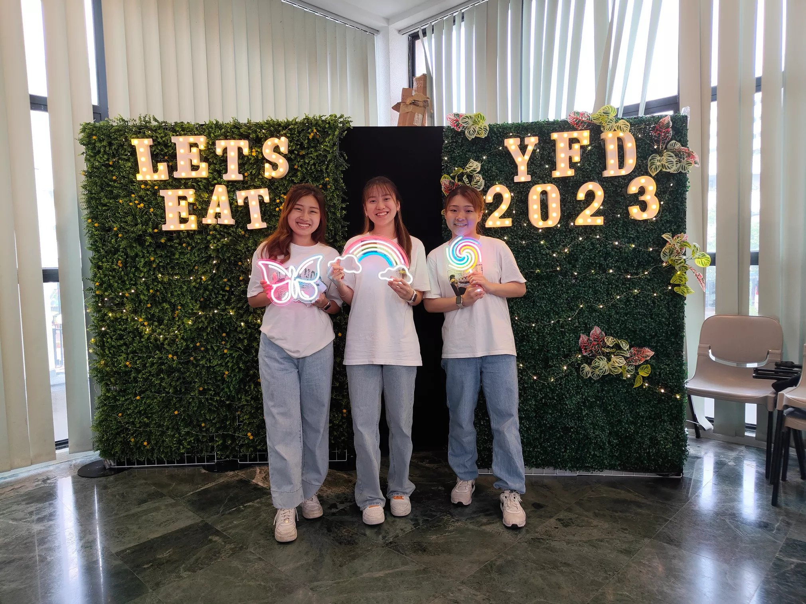
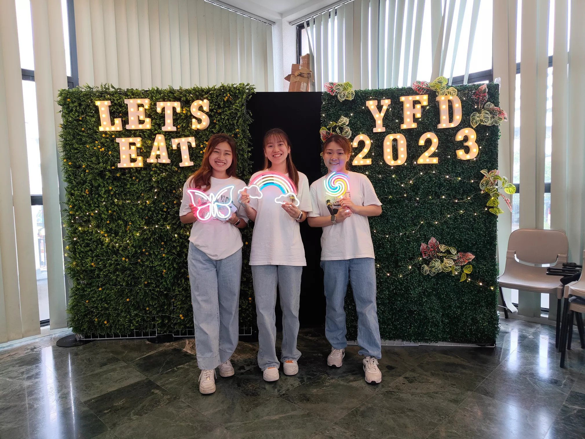

Youth Formation Day
A place where we keep our memories


 

Deon
Jairus Tan and Tristan Tan (PD)
Thank you to all the korkors and jiejies for your guidance and patience with us! We had a lot of fun and it's amazing we can learn the choreography in such a short span of time. |
Joel and Joey
Thank you to all the big sisters Kah Yun, Kah Wei and brothers Alvin, Deon and Jia Hao for guiding us in our dance steps for this Youth Formation Day! |
Michelle LimTo Deon: Hello Deon, thank you for being our choreo for this dance item! It must be tough juggling with your commitments and YFD - to teach such a big group of us in a short span of time. You’ve done a great job and I really enjoyed myself during this short period! Thank you for all your effort, and it was great knowing you (even though we didn’t manage to talk much :P). Continue to jiayou in whatever you’re going through, and see you around in Gakkai! ^^ |
Nesta (PD) and Deniscia (PD)
Thank you all the kor kor jiejie for teaching us how to dance and also being patient with us! |
|
DenyseHello Deon! Don’t know if you remember me, but it was nice meeting you again since NDP 2021! (You were my ic heheheheh) Thanks for having lots of patience teaching the kids and us the youths as well. I know it isn’t easy taking up this, especially with your busy schedule, but you did an excellent job! I hope there are more opportunities to meet soon! |
Tay Hao WenHi Deon! Thank you for being a great trainer! Really appreciate your efforts, it’s not easy being a trainer especially trying to guide the playful PDs. I really enjoyed myself during this YFD journey and also made a few friends! Its also great to see you again! (you were my NDP2021 trainer for block F). All the best and Cheers ~Hao Wen :) |
ShaniceHi Deon, thank you for taking up this mission to choreograph and teach us the dance moves in this short time frame! It was not easy to be teaching and managing a big group of FD and PD together. Good job for the amazing efforts! Let’s all enjoy the last performance together! |
Qian WenHi Deon, thank you for taking up this mission to choreograph and teach us the dance. It must not have been easy to teach all of us, ensure that we are ready to perform in such a short timeframe, and manage the PDs during training sessions. Thank you so much for your efforts! You have really done a great job! |
Chee Yong ShinDeon - Thank you for your support and putting in all your hard work and effort to train us. I really enjoyed all the trainings! Naomi ChewDeon - Thank you for guiding us through this wonderful journey! |
Si EnHey Deon! Thank you for making me love dance more! Initially I was afraid to join this segment as I am a slow learner and am thus scared that I wouldn’t be able to catch up & remember all the dance steps. But when you started teaching the steps, I felt so assured and grateful because the patience you had and guidance you gave to the group aided me in grasping the steps well. Thank you for your consistent efforts as a choreographer and a trainer! I have always looked forward to every week’s training, eager to learn new steps and to see how the final product will turn out, i will miss this past 1 month! |
Myla NgThank you for being such an amazing dance trainer for us!! I really appreciate you for making the effort and taking the time to teach us the dance steps. This was my first-ever dance performance, and I was so nervous to perform as I didn't know how I would look, but thanks to your guidance and support, I was able to step out of my comfort zone and enjoy myself during both the rehearsals and the performances!! Thank you so much!! üòä |
JiaminThank you for guiding us being our trainer for our Tri-Region 1, 6, 9 Youth Formation Day July 2023! It's really great seeing you being my trainer again. Remember the time you were training me during the National Day Parade 2021, that was 2 years ago (Woah!), time really passed by so quickly. Truly grateful to have had the opportunity to learn from you, and being my trainer again for Youth Formation Day! Once again, thank you for being an outstanding trainer and for making the Tri-region 1, 6, 9 Youth Formation Day a resounding success. |
BryanHi Deon! Bryan here, I just want to say, thank you, so, so much for your courage and your patience in taking up the role as a choreographer in this Let's E.A.T Youth Gathering Dance performance. I know it's not easy, and I really appreciate everything that you do. I really like your energy and passion in training us for the dance performance. ‚ù§Ô∏è I'm sure all of your efforts will not be wasted, and I'm wishing you tremendous actual proof in your lives. üôèüèª Stay safe and see you around soon :) |
Alexis and EwenDeon: Thank you, trainer jie jie, and kor kor for teaching us how to dance. This is our first dance performance, and it's amazing that you are patient and not angry at our mischievousness and playfulness. You are inspiring with your thoughtfulness, patience, warmth, and cheerfulness. We love that we are part of the dance performance with all of you. Thank you for the smiles always. And we appreciate your little gift. ü§ó |
YaZhen
Hi Deon, thanks for teaching us dance steps, I really enjoy & like it! |
Crystal Gay
Thank you for teaching me, you have made this experience so fun. |
Xi TongHi Deon, thank you for making me love dance more!At first, i was really scared but now i am very interested in it.Thank you for being very patient and encourage us when we are about to perform. |
GladysHey Deon! Thank you for your efforts and for believing in us! Your patience is really out of this world! Hope you had a great experience like I did :D seeya around! |
Carolyn & AbbyThank you for being our trainer. We enjoyed ourselves very much. We are so happy to be part of the dance item. This is the first time we are dancing, and we love it. Thank you for your gift to us too. |
Zhi Xuan
Congrats on making it this far! |
Ang Zi Qing
thank you for taking the time to teach us! |
ValerieHi Deon! Thank you for your efforts and patience in choreographing and teaching us the dance for this YFD. Really appreciate your efforts, positivity and energy you give out at every session and it was joyful to be part of this dance item with you all! Really thank you and the other trainers!! |
Jason
Hey Deon , thank you for being a choreographer! |
CarolHi Deon! Thank you so much for taking up the role as Choreographer for this YFD. I know it's not easy due to the limited amount of time and having to take care of the younger children. Thank you so much for your effort and you have done a great job! |

Kah Yun
Gladys
Hi Kai Yun! Great job in guiding the PDs! |
Naomi ChewKahYun - Thank you for helping us through the entire journey! |
Crystal Gay
Thank you for teaching me, you have made this experience so fun. |
||
Xi Tong
Hi Kah Yun, thank you for teaching us the dance steps.I appreciate the times that you taught us on the first few trainings. |
Jason
Hey Kah Yun! |
Carolyn & AbbyThank you for being our trainer. We enjoyed ourselves very much. We are so happy to be part of the dance item. This is the first time we are dancing, and we love it. Thank you for your gift to us too. |
Zhi Xuan
Hey man. |
Ya Zhen
Hi KahYun, thanks for teaching us dance steps! |
Carol
Yo Sis! Thank you so much for taking up the role as Choreographer for this YFD. |
Qian WenHi Kah Yun, thank you for taking up this mission to choreograph and teach us the dance. Although most of the time you were with the PDs, I really enjoyed the training sessions with you. Thank you for all the efforts put in for this dance item, making this performance a great success! You have really done a great job! |
ValerieHi Kah Yun! Thank you for your efforts and patience in choreographing and teaching us the dance for this YFD. Really appreciate your efforts, positivity and the smile you never fail to wear each time you teach us and it was joyful to be part of this dance item with you all! Really thank you and the other trainers!! |
ShaniceHi Kah Yun, thank you for taking up this mission to choreograph and teach us the dance moves! It was not an easy feat to be guiding our PD’s. You did an awesome job, and all our fellow PD’s are shining brightly on stage with the amazing moves! Let’s all enjoy the last performance together! |
Ang Zi Qing
thank you for taking the time to teach us! |
DenyseHello Kah Yun! It was nice getting to know you through this journey, I had lots of fun! Know it wasn’t easy for you to take on this role, (especially when all the ics all damn busy and you have to tank everything) I know it isn’t easy taking care of the kids as well, but you did a great job and your patience paid off! Hope we can meet again soon! Maybe both of us become participants the next time then we can talk to each other more!! |
Jairus Tan and Tristan Tan (PD)Thank you to all the korkors and jiejies for your guidance and patience with us! We had a lot of fun, and it's amazing we can learn the choreography in such a short span of time. We hope to participate again next year! We will definitely miss the weekly training sessions! And thank you for the thoughtfulness and effort in writing the encouragement notes and the goodie bags! ♥️ |
Michelle LimTo Kah Yun: Hello Kah Yun, thank you for taking up the challenge to be our choreo! I’m sure it wasn’t an easy task to teach such a big group of us and especially to manage the PDs. You did a great job, and I really enjoyed the dance during this short span of time :) Thank you for all your effort, and it was great knowing you (even though we didn’t get to interact much :P). Continue to jiayou in whatever you’re going through, and see you around in Gakkai! ^^ |
Nesta (PD) and Deniscia (PD)Thank you all the kor kor jiejie for teaching us how to dance and also being patient with us! We really enjoy the trainings and didn't know we can master them in a short period of time. We hope to learn how to dance again from you all. Thank you for the goodie bags and encouragement notes! These definitely boost our courage and confidence to give our best once again for the last performance. Thank you so much once again! |
Tay Hao WenHi Kah Yun! Thank you for being an amazing trainer! I can see that you are doing your best to attend all the sessions and challenging yourself to step out of your comfort zone to teach everyone the dance steps! (especially trying to teach the playful PD kids) I really enjoyed myself during this YFD journey and also made a few friends. You are doing great! Jia yous!! - To dare, To dream, To win - See ya around ~ Hao Wen :) |
BryanTo Kah Yun - Hi Kah Yun! Bryan here, thank you so, so much for your patience and for taking your time off to be a choreographer dance trainer. I know it's not easy to juggle work and soka activities, but I want to take a moment to thank you sincerely for your efforts in training us for the dance performance in this Let's E.A.T gathering. I really enjoy your enthusiasm throughout the dance training, and I can see you give it your all. Unseen virtue brings about visible rewards, and I'm sure all of your efforts as a trainer for this Let's E.A.T will never go to waste. I'm sure you will receive actual proof in your lives. Continue to jiayou in what you do. ❤️ |
Myla Ng
Thank you for being such an amazing dance trainer for us!! |
JiaminThank you for guiding us being our trainer for our Tri-Region 1, 6, 9 Youth Formation Day July 2023! Even though we never talked before or had any interactions during our dance practice for the Youth Formation Day, you did great and were a wonderful trainer. Youth Formation Day wouldn't have been the same without your presence and guidance. We are truly grateful to have had the opportunity to learn from you. Once again, thank you for being an outstanding trainer and for making the Tri-region 1, 6, 9 Youth Formation Day a resounding success. |
Si En
Hey Kah Yun! |
Alexis and Ewen
Kah Yun: |
Alvin
Zhi Xuan
Hi Alvin, great to see you again this time. |
Si EnHi Alvin! Thank you for your efforts as our choreographer and as our trainer! All of you make a wonderful team and we are so grateful to be guided by you all! thank you and wishing you all the best! |
Carolyn & AbbyThank you for being our trainer. We enjoyed ourselves very much. We are so happy to be part of the dance item. This is the first time we are dancing, and we love it. Thank you for your gift to us too. |
Gladys
Hey Alvin! Thank you for your patience and for encouraging us all the time! |
Ya Zhen
Hi Alvin, thanks for teaching us dance steps, I really enjoy & like it! |
Myla NgThank you for being such an amazing dance trainer for us!! I really appreciate you for making the effort and taking the time to teach us the dance steps. This was my first-ever dance performance, and I was so nervous to perform as I didn't know how I would look, but thanks to your guidance and support, I was able to step out of my comfort zone and enjoy myself during both the rehearsals and the performances!! Thank you so much!! üò∫ |
Nesta (PD) and Deniscia (PD)Thank you all the kor kor jiejie for teaching us how to dance and also being patient with us! We really enjoy the trainings and didn't know we can master them in a short period of time. We hope to learn how to dance again from you all. Thank you for the goodie bags and encouragement notes! These definitely boost our courage and confidence to give our best once again for the last performance. Thank you so much once again! |
Michelle LimTo Alvin: Hello Alvin! It was nice seeing you, and you being our choreo! Majority of the time we will only see each other during our own item performances. Hence to be able to be in the same item feels great! Thank you for all your effort and time teaching and guiding us, making this item possible! Continue to jiayou in whatever you’re going through, and see you around in Gakkai :) |
Jairus Tan and Tristan Tan (PD)Thank you to all the korkors and jiejies for your guidance and patience with us! We had a lot of fun, and it's amazing we can learn the choreography in such a short span of time. We hope to participate again next year! We will definitely miss the weekly training sessions! And thank you for the thoughtfulness and effort in writing the encouragement notes and the goodie bags! ♥️ |
JiaminThank you for guiding us being our trainer for our Tri-Region 1, 6, 9 Youth Formation Day July 2023! Even though we never talked before or had any interactions during our dance practice for the Youth Formation Day, you did great and were a wonderful trainer. Once again, thank you for being an outstanding trainer and for making the Tri-region 1, 6, 9 Youth Formation Day a resounding success. |
ShaniceHi Alvin, thank you for taking up this mission to choreograph and teach us the dance moves! Although this was a short journey, we made it past Day 1 performance! Let's all enjoy the last performance together! |
Ang Zi Qing
thank you for taking the time to teach us! |
|||
BryanTo Alvin - Hi Alvin! Bryan here, I just want to say, thank you so, so much for your sincere efforts as a choreographer dance trainer in this Let's E.A.T dance youth gathering performance. I can really understand how much effort it takes to make this dance performance a success. I know it's not easy, and I want to take this moment to thank you for your courageous efforts in making this dance performance a success. Also, do take care of yourself and continue to do your utmost best in whatever you do. I can assure you, you will be blessed with good fortune, and I know for certain you will succeed in what you do. Thank you so much for your effort, and see you around soon! ❤️ |
Alexis and Ewen
Alvin: |
Joel and Joey
Thank you to all the big sisters Kah Yun, Kah Wei and brothers Alvin, Deon and Jia Hao for guiding us in our dance steps for this Youth Formation Day! |
Tay Hao WenHi Alvin! Thank you for being a great trainer for this YFD! It must not have been easy for you to juggle between YFD and other commitments! Really appreciate your efforts! I really enjoyed myself and also made a few friends. Thank you for sharing your thoughts during the small group dialogue which reminded me of the importance of having friends! Jia yous and all the best! ~ Hao Wen :) |
Naomi ChewAlvin - Thank you for helping us all the way! Crystal Gay
Thank you for teaching me, you have made this experience so fun |
CarolHi Alvin! Thank you so much for taking up the role as Choreographer for this YFD. I know it's not easy due to the limited amount of time and having to take care of the younger children. Thank you so much for your effort and you have done a great job! |
Qian WenHi Alvin, great to see you for this dance item. Thank you for taking up this mission to choreograph and teach us the dance. This journey has been really short, and it must not have been easy to juggle your commitments and ensure the great success of this performance. Thank you for all your efforts! You have really done a great job! |
ValerieHi Alvin! Thank you for your efforts and patience in choreographing and teaching us the dance for this YFD. Really appreciate your efforts, positivity and enthusiasm you give out at every session and making sure that we are able to catch the dance steps. It was joyful to be part of this dance item with you all! Really thank you and the other trainers!! |
Jason
Hai Alvin , thank you again for taking this role as a choreographer! |
Xi Tong
Hi Alvin thank you for your patience in teaching us the dance steps. Understand you were unwell and just recovered last sunday from your sore throat. |

Kah Wei
Zhi Xuan
Hi Kah Wei. |
Gladys
Hi Kah Wei! |
Si En
Hi Kah Wei! |
Carolyn & AbbyThank you for being our trainer. We enjoyed ourselves very much. We are so happy to be part of the dance item. This is the first time we are dancing, and we love it. Thank you for your gift to us too. |
Xi Tong
hi Kah Yun,thanks for teaching us and always help us when we are in need. |
Myla NgThank you for being such an amazing dance trainer for us!! I really appreciate you for making the effort and taking the time to teach us the dance steps. This was my first-ever dance performance, and I was so nervous to perform as I didn't know how I would look, but thanks to your guidance and support, I was able to step out of my comfort zone and enjoy myself during both the rehearsals and the performances!! Thank you so much!! ü©∑ |
Nesta (PD) and Deniscia (PD)Thank you all the kor kor jiejie for teaching us how to dance and also being patient with us! We really enjoy the trainings and didn't know we can master them in a short period of time. We hope to learn how to dance again from you all. Thank you for the goodie bags and encouragement notes! These definitely boost our courage and confidence to give our best once again for the last performance. Thank you so much once again! |
Michelle Lim
To Kah Wei: |
JiaminThank you for guiding us being our trainer for our Tri-Region 1, 6, 9 Youth Formation Day July 2023! Even though we never talked before or had any interactions during our dance practice for the Youth Formation Day, you did great and were wonderful trainers. We are truly grateful to have had the opportunity to learn from you. Once again, thank you for being an outstanding trainer and for making the Tri-region 1, 6, 9 Youth Formation Day a resounding success. |
Jairus Tan and Tristan Tan (PD)Thank you to all the korkors and jiejies for your guidance and patience with us! We had a lot of fun and it's amazing we can learn the choreography in such a short span of time. We hope to participate again next year! We will definitely miss the weekly training sessions! And thank you for the thoughtfulness and effort in writing the encouragement notes and the goodie bags! ♥️ |
Qian wenHi Kah Wei, great to see you for this dance item.Thank you for taking up this mission to choreograph and teach us the dance amidst your busy schedule. It must not have been easy to juggle your commitments and ensure the great success of this performance within such a short timeframe. Thank you for all your efforts! You have really done a great job! |
CarolHi Kah Wei! Thank you so much for taking up the role as Choreographer for this YFD. I know it's not easy due to the limited amount of time and having to take care of the younger children. Thank you so much for your effort and you have done a great job! |
BryanTo Kah Wei - Hi Kah Wei! Bryan here, I just want to say, thank you so, so much for your sincere efforts as a choreographer dance trainer in this Let's E.A.T dance youth gathering performance. I can understand how much stress and pressure it takes to come down for every single training and to really foster us while doing your best at your workplace too. I can see how much passion and energy you put towards training us for each performance, and I truly appreciate you from the bottom of my heart for working so hard to make this dance performance a success. Do take breaks too at the same time, and thank you so much for your sincere efforts. My senior in faith once told me that always remember that nothing is ever wasted for kosen-rufu activities. Do your best as always. Cheers! ❤️ |
||
Crystal Gay
Thank you for teaching me, you have made this experience so fun. Ang Zi Qingthank you for taking the time to teach us! Pls take good care of yourself and enjoy the last performance! Jiayou!!!! |
Jason
Hey Kah Wei! |
Naomi ChewKahWei - Thank you for teaching us the dance steps! Ya Zhen
Hi KahWei, thanks for teaching us dance steps, I really enjoy & like it! |
Valerie
Hi Kah Wei! |
Alexis and EwenKah Wei: Thank you, trainer kor kor for teaching us how to dance. This is our first dance performance, and it's amazing that you are patient and not angry at our mischievousness and playfulness. You are inspiring with your thoughtfulness, patience, warmth, and cheerfulness. We love that we are part of the dance performance with all of you. Thank you for the smiles always. And we appreciate your little gift. üòä |
Joel and JoeyThank you to all the big sisters Kah Yun, Kah Wei and brothers Alvin, Deon and Jia Hao for guiding us in our dance steps for this Youth Formation Day! This is indeed a memorable experience for us to put up a dance performance! We appreciate that you assist us in the standing positions during the rehearsals. We enjoy our dance rehearsals and definitely will miss the joys of dancing in Soka HQ! Also, a big thank you for preparing personalized cards and snacks for us! |
Tay Hao WenHi Kah Wei! Thank you for being a great trainer for this YFD! It must not have been easy for you to juggle between YFD and other commitments! Really appreciate your efforts! I really enjoyed myself and also made a few friends! Jia yous and all the best! - To dare, To dream, To win - Cheers ~ Hao Wen :) |
ShaniceHi Kah Wei, thank you for taking up this mission to choreograph and teach it to us too! Awesome job for the amazing efforts, and let us all enjoy the last performance together! |
||
Jia hao
Crystal Gay
Thank you for teaching me, you have made this experience so fun. |
Liao YuxinHi Jiahao Kor Kor, thank you so much for the effort, passion and patience to teach me and fellow PDs the dance steps. This is my first ever performance for Soka Gakkai Singapore, and I am so grateful to you for making it happen. Thank you so so much!! |
Ya Zhen
Hi Jia Hao, thanks for teaching us dance steps! |
Ang Zi Qing
thank you for taking the time to teach us! |
Naomi ChewJiahao - Thank you for having so much patience! |
DenyseHello Jiahao! It's me!!! I know this journey wasn’t easy for you, especially juggling both your course, work, and other meetings, but you did a great job! Coming for training when you are in your busy peak, coming early to learn steps, volunteering to take care of kids, and many more! Thanks for putting in so much effort! Shall see each other soon ya! |
JiaminThank you for guiding us being our trainer for our Tri-Region 1, 6, 9 Youth Formation Day July 2023! It's great seeing you being a trainer for Youth Formation Day, so happy for you. You did great and were wonderful trainers. We are truly grateful to have had the opportunity to learn from you. Once again, thank you for being an outstanding trainer and for making the Tri-region 1, 6, 9 Youth Formation Day a resounding success. |
ValerieHi Jiahao! Thank you for your efforts and patience in choreographing and teaching us the dance for this YFD. Really appreciate your efforts and energy you give during training. It was joyful to be part of this dance item with you all! Really thank you and the other trainers!! |
Qian WenHi Jia Hao! Thank you for taking up this mission to choreograph and teach us the dance. Really grateful for all the efforts you have put in and the time y’all spent to record the practice videos. They really helped a lot! Hope you enjoyed this short journey preparing for this performance and wish you all the best! |
Jairus Tan and Tristan Tan (PD)Thank you to all the korkors and jiejies for your guidance and patience with us! We had a lot of fun and it's amazing we can learn the choreography in such a short span of time. We hope to participate again next year! We will definitely miss the weekly training sessions! And thank you for the thoughtfulness and effort in writing the encouragement notes and the goodie bags! ♥️ |
Xi Tong
Hi Jia Hao, thank you for teaching us the dance steps.I appreciate the times that you taught us on the first few trainings. |
Jason
Hey Jia Hao! |
Carolyn & AbbyThank you for being our trainer. We enjoyed ourselves very much. We are so happy to be part of the dance item. This is the first time we are dancing, and we love it. Thank you for your gift to us too. |
Gladys
Hi Jia Hao! Great job in guiding the PDs! |
Zhi Xuan
Hey man. |
Myla NgThank you for being such an amazing dance trainer for us!! I really appreciate you for making the effort and taking the time to teach us the dance steps. This was my first-ever dance performance, and I was so nervous to perform as I didn't know how I would look, but thanks to your guidance and support, I was able to step out of my comfort zone and enjoy myself during both the rehearsals and the performances!! Thank you so much!! ü§ó |
Joel and JoeyThank you to all the big sisters Kah Yun, Kah Wei and brothers Alvin, Deon and Jia Hao for guiding us in our dance steps for this Youth Formation Day! This is indeed a memorable experience for us to put up a dance performance! We appreciate that you assist us in the standing positions during the rehearsals. We enjoy our dance rehearsals and definitely will miss the joys of dancing in Soka HQ! Also, a big thank you for preparing personalized cards and snacks for us! |
Tay Hao WenHi Jia Hao! Thank you for being a great trainer for this YFD! It must not have been easy for you to juggle between YFD and other commitments. Really appreciate your efforts! I really enjoyed myself and also made a few friends! I was also heartened to hear your experience from the small group dialogue. It’s a journey of self-discovery, and remember to always chant to the Gohonzon, no matter what happens! Jia yous and all the best! ~ Hao Wen :) |
Nesta (PD) and Deniscia (PD)Thank you all the kor kor jiejie for teaching us how to dance and also being patient with us! We really enjoy the trainings and didn't know we can master them in a short period of time. We hope to learn how to dance again from you all. Thank you for the goodie bags and encouragement notes! These definitely boost our courage and confidence to give our best once again for the last performance. Thank you so much once again! |
Michelle LimTo Jiahao: Hello Jiahao! It was nice seeing you again, and it feels good seeing familiar faces :) Thank you for being our choreo, taking your time out of your busy schedule to teach us, and guide us! You made our day better with your positive energy during every training. Continue to jiayou in whatever you’re going through, and see you around in Gakkai :) |
Si En
Hey Jia Hao! |
BryanHi Jiahao! Bryan here, I just want to say, thank you so, so much for your sincere efforts as a choreographer dance trainer in this Let's E.A.T dance youth gathering performance. I know how tiring it is to come down to train us for each dance performance, and I can tell you're really giving your best and the passion to train us. I can assure you that all of your efforts for kosen-rufu are never wasted, and I'm sure your hard work pays off, especially after this Let's E.A.T dance performance. Wishing you all the best in what you do, and do continue to strive to do your best in your daily lives. Cheers! ❤️ |
ShaniceHi Jia Hao, thank you for taking up this mission to choreograph and teach us the dance moves! Greatly appreciate the dance practice recordings! It was really helpful! Let's all enjoy the last performance together! |
Alexis and EwenJiahao: Thank you, trainer kor kor for teaching us how to dance. This is our first dance performance, and it's amazing that you are patient and not angry at our mischievousness and playfulness. You are inspiring with your thoughtfulness, patience, warmth, and cheerfulness. We love that we are part of the dance performance with all of you. Thank you for the smiles always. And we appreciate your little gift. üòÅ |
Chee Yong ShinJiaHao - Thank you for your support and putting in all your hard work and effort to train us. I really enjoyed all the trainings! |